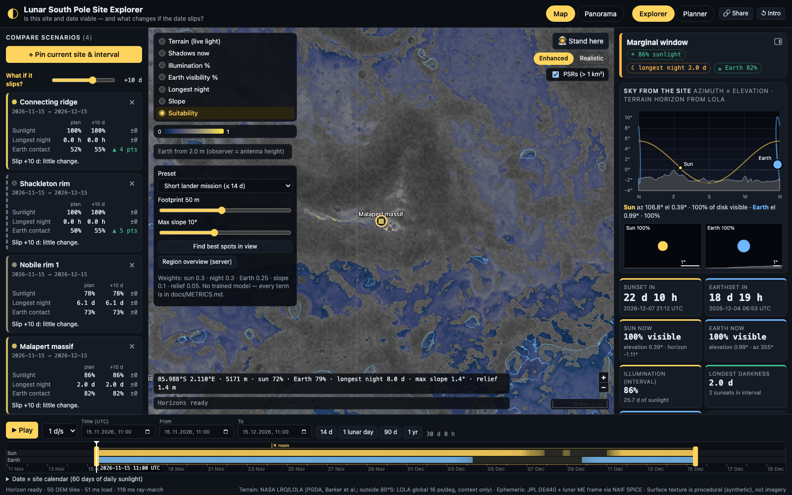
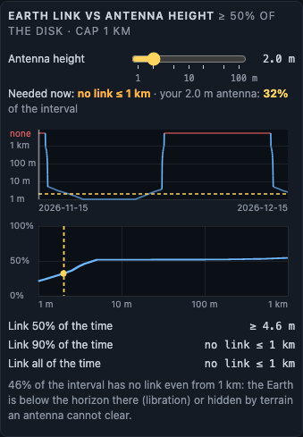
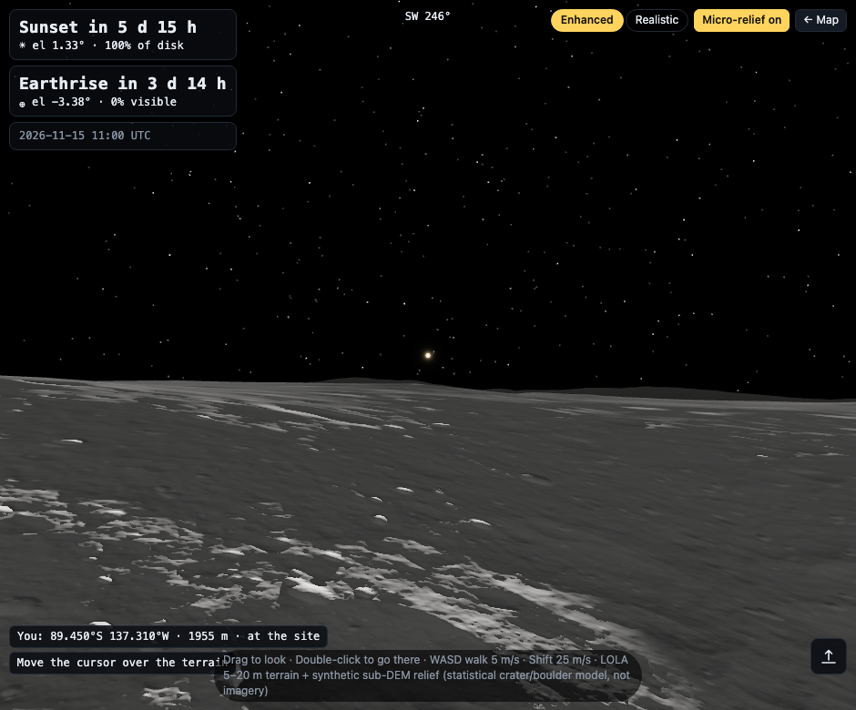
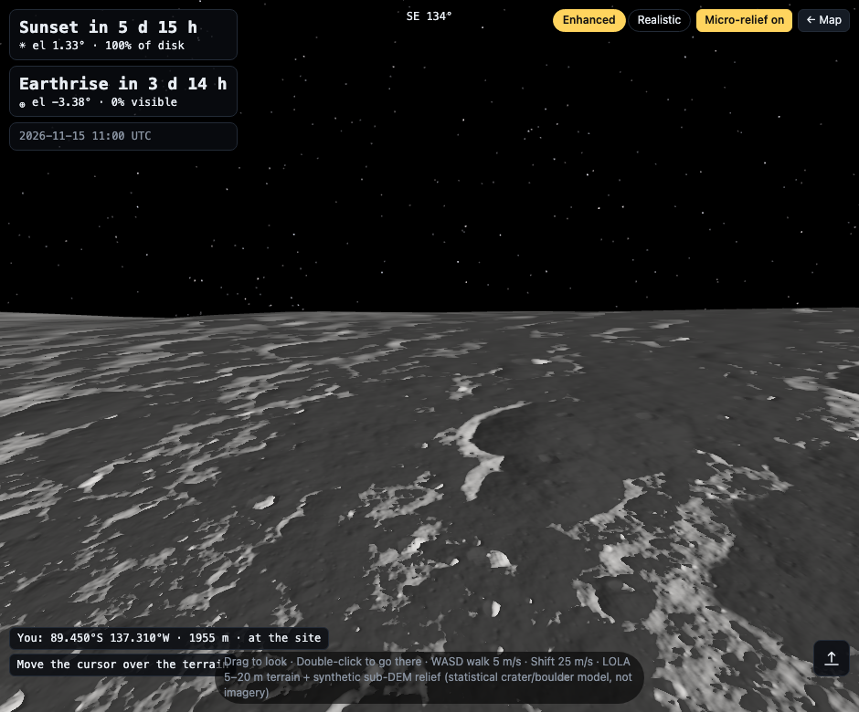

Подходит ли место и дата посадки — и что изменится, если дата сдвинется?
Солнце и Земля на фоне реального рельефа горизонта по данным NASA LRO LOLA. Сравнение сценариев за секунды вместо нескольких специализированных инструментов.
Пример из нашей демонстрации: Connecting ridge, 14 суток от 2027-04-28 даёт 89% света и ночь 5 ч. Сдвиг на 10 суток: 24% света и ночь 108 ч. Для солнечного аппарата это может стать концом миссии.
| Инструмент | Что даёт | Недостатки для быстрой оценки |
|---|---|---|
| Quickmap Arizona State University |
Снимки высокого разрешения, топография, данные LRO. Хорош для изучения рельефа полярных регионов | Интерфейс для специалистов; нет готового ответа «хватит ли света и связи на эту дату»; сценарии не сравнить рядом |
| Moon Trek NASA |
3D-визуализация поверхности, топография, понимание рельефа в точке посадки | Показывает рельеф, но не считает время до заката и Earthset; нет метрик энергии и связи; нет сдвига даты |
| JPL Horizons NASA/JPL |
Точные эфемериды: углы Солнца и Земли для любой точки Луны и момента времени | Таблицы без рельефа; горизонт и тени нужно считать отдельно; вход через форму или командную строку |
Разрыв: данные есть, но чтобы оценить одну пару «место–дата», нужно пройти по трём инструментам и самому свести результаты. Для десяти сценариев после сдвига запуска это дни работы.


Земля в окне либрации может скрыться за рельефом. График показывает, на какой высоте мачты связь есть 50% и 90% времени.
Процент света за интервал, самая длинная ночь, время до заката. Всё считается по реальному горизонту, а не по гладкой сфере.
Прозрачная формула: свет 0,3 · ночь 0,3 · Земля 0,25 · уклон 0,1 · рельеф 0,05. Обученной модели нет, каждый вес виден и описан.
Задайте миссию, размер площадки и максимальный уклон, и карта подсветит лучшие места в кадре.


вместо трёх инструментов: свет, ночь, связь и рельеф по месту и дате
«а если сдвиг +N дней» превращает пересчёт в одно движение
отклонение направления на Солнце от JPL Horizons (на Землю 0,115″)